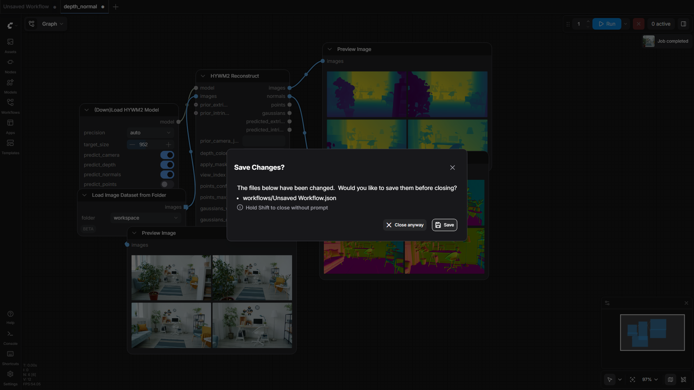

PozzettiAndrea/ComfyUI-HYWM2
Test Results
2026-05-25 19:33 UTC
Test run
Windows-2025Server-10.0.26100-SP0
AMD64 Family 25 Model 17 Stepping 1, AuthenticAMD
100.0%
1 passed
1/1 tests
Workflows
Grid
List

depth_normal
pass
249.07s
Downloaded Models
6 files · 3.0 GB
models/hywm2/
3.0 GB
model.safetensors
3.0 GB
config.json
842.0 B
.cache\huggingface\CACHEDIR.TAG
195.0 B
.cache\huggingface\download\model.safetensors.metadata
128.0 B
.cache\huggingface\download\config.json.metadata
104.0 B
.cache\huggingface\.gitignore
1.0 B
×
‹
›
0.0s / 0.0s
Resource Usage
RAM (GB)
VRAM (GB)